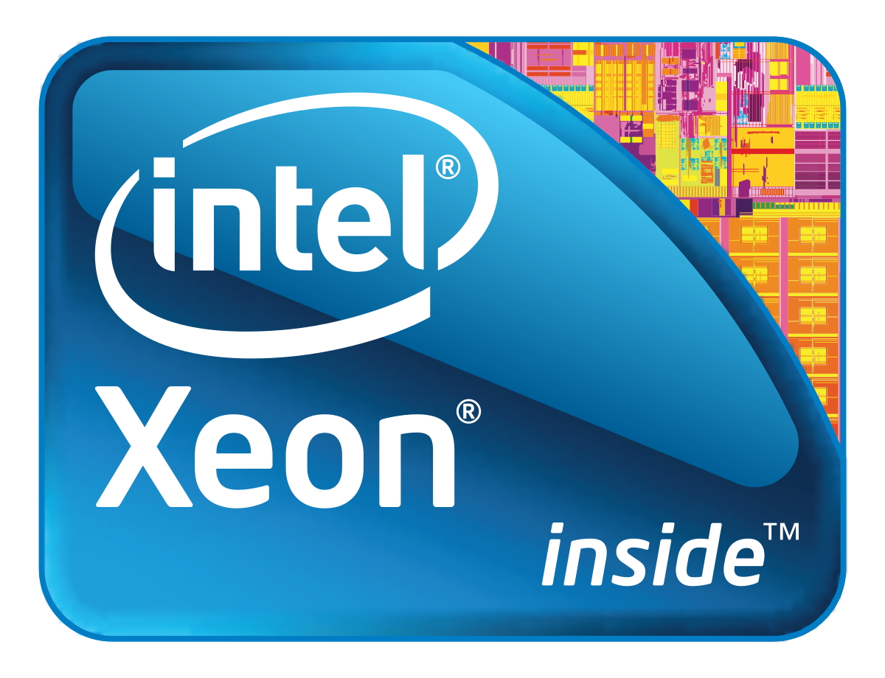
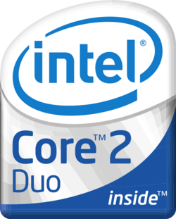
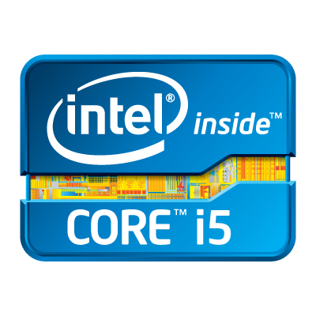
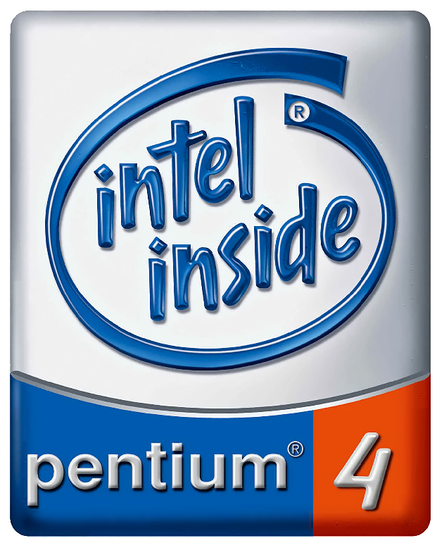
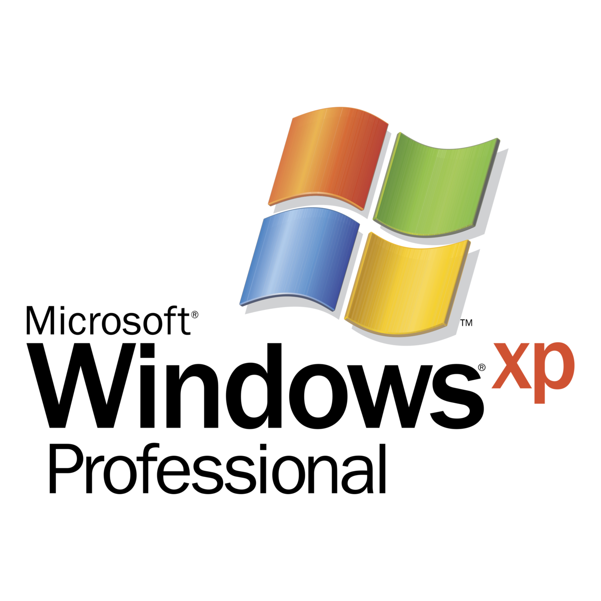
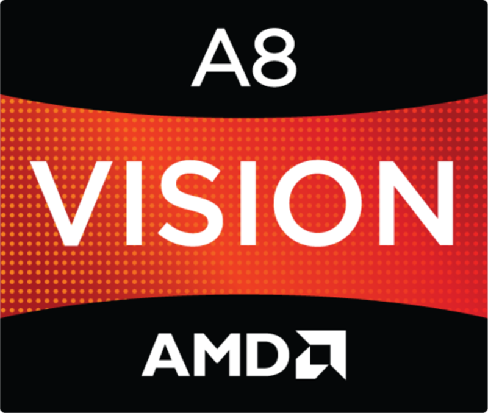
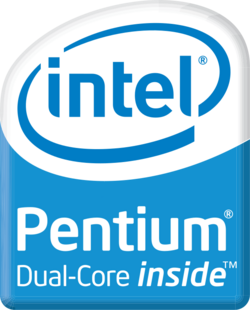

Computer Collection
This section of the site lists my current collection of computer equipment- excluding mobile devices.
A page for mobile devices will be created later. :P Home
Home Computers and MORE Computers
Computers and MORE Computers
 Other Things Waaaaaaay Cooler Than Me
Other Things Waaaaaaay Cooler Than Me
Page last updated: July 14, 2021

| Year
Acquired |
Manufacturer | Model | Processor | RAM | Storage | OS | Role |
|---|---|---|---|---|---|---|---|
| 2020 | Dell | OptiPlex 7020 |  4790@3.6GHz
4790@3.6GHz |
24GB DDR3-1600 | 250GB-SSD (OS)
1TB-HDD (Secondary) |
8.1 Pro |
Main Computer |
| 2021 | Dell | PowerEdge T310 |  X3440@2.8GHz | 16GB ECC DDR3 | 250GB-HDD (OS)
1TB-HDD (Storage1) 8TB-HDD (Backup) |
Enterprise |
Main Server
Active Directory File and Backup EMail (Mercury) Alternate Web Server (IIS 8) Soon-to-be Minecraft Server |
| 2020 | Raspberry Pi | Pi 3 Model B Rev 1.2 | ARMv7 Quad Core (details soon)@0.9GHz | 1GB DDR3? | 16GB SanDisk SD Card | Raspbian 9.13 (Debian) | Secondary Server (Linux)
Primary Web Server (Apache) IRC Server (unrealircd) AFP Server (netatalk) RTMP Server (owncast) |
| 2021 | Dell | Latitude D630 |  2.0 GHz | 4GB DDR2 | 240GB-SSD | Windows 7 Ultimate | Main Laptop
Second childhood laptop: 2014-2015 asshole brother broke screen |
| 2020 | Apple | Power Mac G5 (Early 2004) | Dual (Processor) PowerPC 970 (G5) @ 2.0GHz | 3GB DDR(1) | 250GB-HDD | Mac OS X Leopard-10.5
SOON:Lubuntu (PPC compiled) Because G5 systems run like a kitten on Linux than OSX |
Main PPC Mac |
| 2017 | Apple | MacBook Air (13-inch, 2017) |  5350U@1.9GHz | 8GB DDR3-1600 (Soldered On) | 128GB Samsung SSD | Mac OS X High Sierra-10.13
SOON:Arch Linux or Win 8 |
Main Computer (2017-2020) |
| 2003/8 | Compaq/HP | Presario 2500 |  2.4GHz | 1GB DDR(1) | 30GB-HDD
Slow, need to replace |

Originally: 
Compaq OEM |
My first ever OWN (handmedown) laptop <3
Original One: sometime in 2008--July 2013 |
| 2012 | Hewlett-Packard | Pavilion p7-1235 |  3.2 GHz | 8GB DDR3-1600
(currently 4gb because reasons) |
1TB-HDD
(failing- need to backup FAST :/) |
HP OEM |
Family PC (2012-2017)-
I used this guy OFTEN <3 The OG Server (2017-2020) Sentimental (but good) 7 machine |
| 2019 | Toshiba | Satellite P55 | 4200U@2.1GHz | 8GB DDR3 | 128GB-SSD |
8.1 Pro |
Crappy Laptop
A bit slow, but better in terms of ports/servicability compared to MBAir |
| 2017 | Dell | OptiPlex 755 |
or 
??? LOL 2.2 GHz |
2GB DDR2 | 80GB-HDD | Arch Linux
Originally: Dual-boot! |
Random Linux Machine
XP/7 Dualboot Machine (2017-2021) |
| 2020 | Dell | OptiPlex 780 | 3.0GHz | 4GB DDR3 | 500GB-HDD |
8.1 Pro |
NOAA WX Radio Streaming/LAN Bridge/Utility Machine
Formerly: 2nd Server (2020-2021) |
| 2019 | Dell | Dimension 8300 | 2.3 GHz(?) | 1GB DDR(1) | 80GB-HDD (IDE) | Main XP Machine
Only machine with IDE |
|
| 2018 | Hewlett-Packard | Thin Client t5730-w | 900MHz | 2GB(?) DDR2 | 2GB-SSD (IDE) |
Embedded Standard (pretty neat!) |
Thin Client, super smol/low-power XP machine |
| 2019 | Apple | iMac (20-inch, Late 2009) | 2.66GHz | 4GB DDR3-1066 | 250GB-HDD | Mac OS X El Capitan-10.11 | Most recent iMac I own
decently specced- runs OSX just fine and will run XP/7 fine too :D |
| 2020 | Apple | iMac G5 (iSight) | PowerPC 970 (G5) 1.5GHz(?) | 512MB On-board DDR(1?) | 160GB-HDD | Mac OS X Leopard-10.5 | Thought this was Intel when I bought it- but nope, G5 LOL |
| 2019 | Apple | MacBook (13-inch, Mid 2007) | 2.1GHz | 2GB DDR2 | 500GB-HDD
formerly MBA ext. drive |
Mac OS X Lion-10.7
Because the stupid ass 32-bit EFI can't install anything else! >:/ |
random MacBook, close to the one I had years ago
I know these guys inside-out they're fairly servicable :D |
| Date
Acquired |
Name | Processor | RAM | ROM/Storage | OS | Notes |
|---|---|---|---|---|---|---|
| July 2017 | Macintosh [128k] | M68000 @ 8Mhz | 128KB (currently 512KB) | 400K 3.5" floppy (not currently working) | System 0.85 (or lower)-System 3.2
Thanks to BMOW's Floppy Emu, great tool |
Given to me by my generous grandmother in Canada
She worked for @L in the mid 80's as a sales manager, and the CEO of the company (Jobs) gave her (and presumably all employees) a discount on a Macintosh This machine is in decent condition, was upgraded by me to a 512K motherboard since the OG 128K mobo has RAM problems. That 128K board, though, has a 1983 copyright date, effectively making it extremely rare :D Came with carrying case floppies and a bunch of booklets/manuals |
| September 2020 | Macintosh SE | M68000 @ 8MHz | 4MB (max, cool) | 800K 3.5" floppy, 80MB(?) Conner HDD | System 7.1 | Got from a Craigslist haul in Sep 2020 for a steal (along with much more stuffs)
System runs just fine and no complaints here |
| September 2020 | Macintosh LC III | M68030 @ 25MHz | 20MB (40MB because virtual memory) | 1.4M floppy, 70GB HD (not entirely, only just a few 2GB partitions because limitations) | System 7.5.5 | Got from a Craigslist haul in Sep 2020 for a steal (along with much more stuffs)
recapped by techknight, system runs very well now. added ethernet card so it can do even more stuff and things |
| October 2019 | Commodore Plus/4 | 6502(?) | ? | N/A | Commodore BASIC and included ROM programs | Acquired at an auction that prev. owners of my family's current house.
Came with only power brick- and ever since I got it I haven't done much at all because I dont have much to test it. Bummed about that XD |